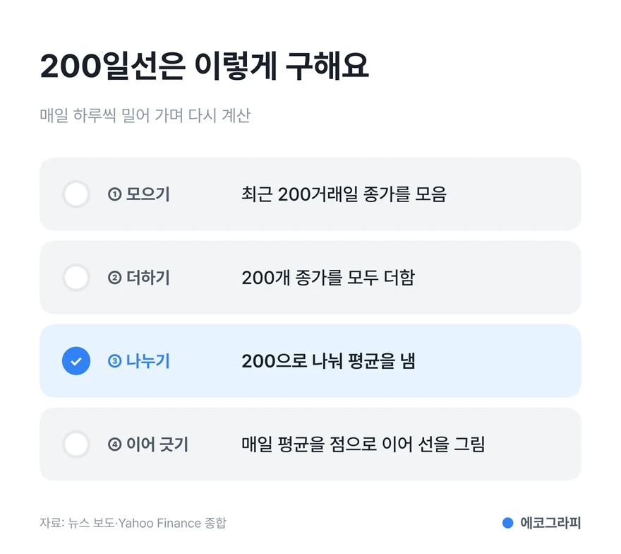
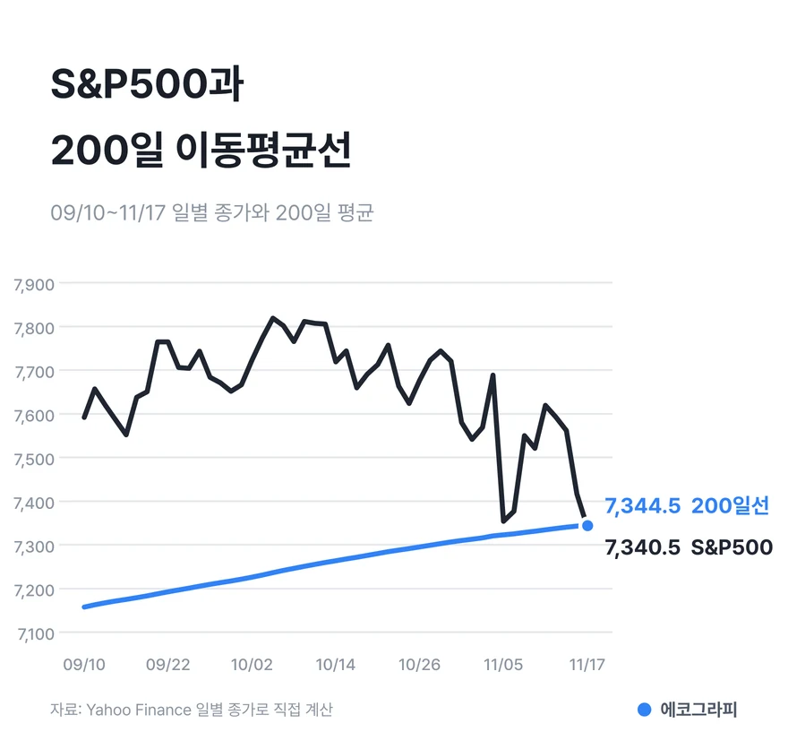
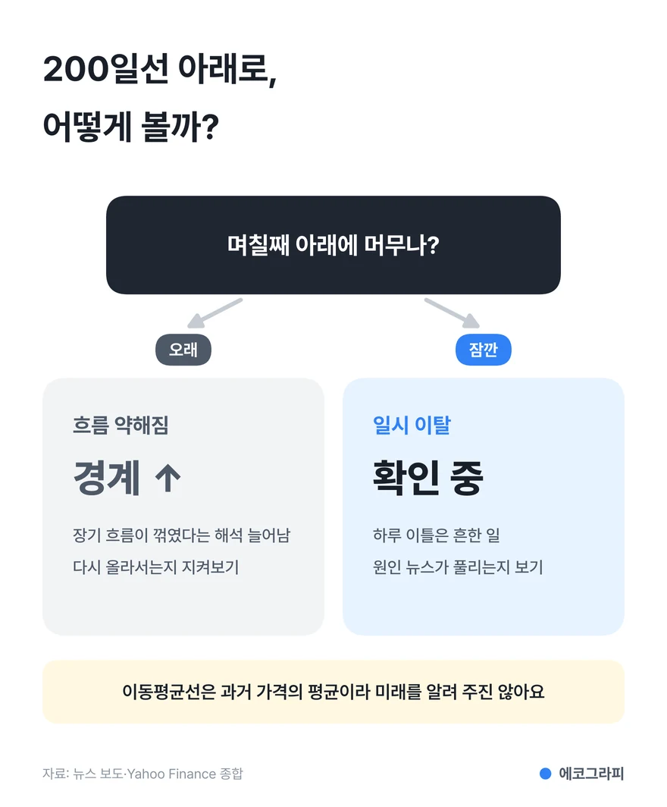
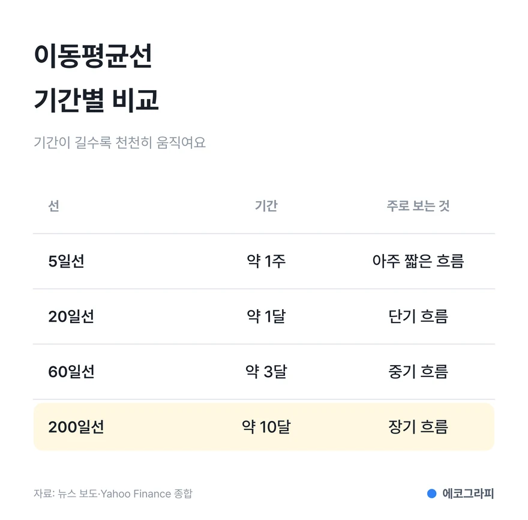

오늘 아침 미국 증시 기사에 "S&P500이 6월 이후 최저로 내려가며 200일 이동평균선을 내줬다"는 표현이 나왔어요. 주식 기사에서 '200일선'이라고 줄여 부르기도 해요. 어제 시장 흐름은 오늘 아침 시황에 정리했어요.
이동평균선(Moving Average): 정해진 기간의 종가 평균을 날마다 새로 구해서 이은 선이에요. 200일 이동평균선은 그 기간이 200거래일이에요.
'이동'이라는 말이 붙는 이유는 하루가 지날 때마다 가장 오래된 하루를 빼고 새 하루를 넣어 평균을 다시 내기 때문이에요. 반 학생 키의 평균을 매년 새로 재는 것처럼, 매일 '최근 200일 평균'을 새로 재는 거예요.

200일은 거래일 기준으로 약 10달이에요. 기간이 길어서 하루하루의 출렁임이 거의 지워지고, 큰 흐름의 방향만 남아요. 그래서 많은 투자자가 "장기 추세가 살아 있나"를 볼 때 이 선을 기준으로 써요.
아래는 S&P500 종가와 200일 이동평균선을 함께 그린 그래프예요. 지수가 위에서 내려와 파란 200일선과 거의 맞닿은 뒤 살짝 아래로 내려간 모습이 보여요.

200일선 아래로 한 번 내려갔다고 바로 큰일이 나는 건 아니에요. 하루 이틀 내려갔다가 다시 올라서는 일도 흔해요. 그래서 기사에서도 "며칠째 아래에 있는지", "다시 회복하는지"를 같이 살펴요.

기억할 것: 이동평균선은 "지금까지의 평균"이에요. 미래를 맞히는 도구가 아니라, 지금 흐름이 평소보다 강한지 약한지를 보는 기준선이에요.

기간이 짧은 선은 빠르게 움직이고, 긴 선은 천천히 움직여요. 짧은 선이 긴 선을 아래에서 위로 뚫으면 골든크로스, 위에서 아래로 뚫으면 데드크로스라고 불러요. 둘 다 이동평균선끼리 만나는 모양을 부르는 이름이에요.
이동평균선은 사고팔 신호가 아니라 흐름을 보는 참고선이에요. 한 번 내려갔다가 금방 회복한 때도 많아서, 이 선 하나로 판단하지 않는 게 좋아요.
아니에요. 주식시장이 열린 날(거래일)만 세요. 주말과 휴일을 빼면 약 10달이에요.
증권사 앱 차트에서 '이동평균선' 설정에 200을 넣으면 볼 수 있어요. 많은 앱이 5·20·60·120일선을 기본으로 보여 줘요.
네, 지수와 개별 종목 모두에 같은 방법으로 써요. 국내에서는 120일선도 자주 봐요.
※ 2026년 11월 기준으로 정리한 글입니다. 세율·제도는 바뀔 수 있으니 거래 전 증권사·국세청 안내를 한 번 더 확인하세요. 특정 종목·상품의 매수·매도 권유가 아닙니다.